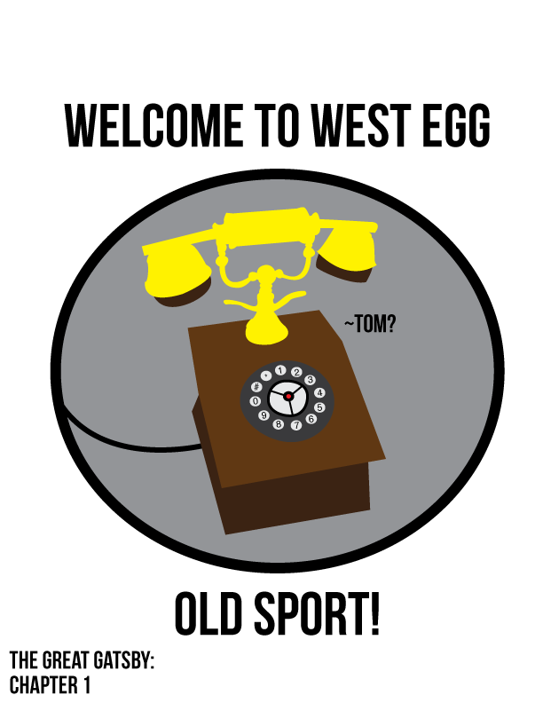

The Great Gatsby: Chapter 4
From The Great Gatspedia, the free gatspedia
The Great Gatsby: Chapter 4
| Page Count | 15 |
|---|---|
| Themes | Control |
| Racism | |
| Women's Roles |
Within chapter 4, Nick is introduced to Gatsby's more illegal affairs when Gatsby invites Nick to lunch at a secret speakeasy. There, Nick meets Meyer Wolfsheim, the man who fixed the World Cup in 1919 and also the husband of his cousin, Tom Buchanan. Afterwards, Jordan Baker invites Nick out to lunch and she tells him the details Gatsby shared with her at his party. She tells Nick how Jay Gatsby fell in love with Daisy Buchanan five years ago. She explains Gatsby specifically bought his home across the bay from Daisy just to be near her. Jordan soon tells Nick that Gatsby wants him to arrange a meeting so they can soon reunite.
Contents
Conflicts
Jay & Daisy’s Love:
This is a major conflict throughout the story. After Daisy rejected Jay and married Tom, Jay has been doing everything in his power to get her back. While Daisy and Tom don’t have pleasant marriage, Daisy relies on Tom for his money, social status, and to be a father to their daughter. It remains to be seen whether true love is enough to rip Daisy away from her marriage. Their love is essentially taboo.
Themes
Polar Opposites: Tom and Gatsby
Tom has maintained his family’s “old wealth”, thus elevating his social status. He is, however, extremely manipulative and promiscuous, often foregoing the sacred bond between he and Daisy. Gatsby, on the other hand, is a newcomer to the wealth of West/East Egg, with many stories circulating his arrival and money. His social status is fragile compared to Tom’s. Gatsby, however, is in love with Daisy, and honors the sanctity of marriage and love.
Historical Reference
World War 1:
Gatsby claims to be a WWI veteran. He speaks of his involvement in the Great War. He talks of how he was awarded a medal by “little Montenegro”, which was a small independent kingdom with close ties to Serbia that fought as a minor power for the Allies in World War 1. Montenegro is now a part of Yugoslavia and Serbia. It is a small independent kingdom with close ties to Serbia. As far as it’s involvement with WWI, war was declared on Montenegro by Austria in 1914. The kingdom fell in 1916 after thousands of Austrians, Bosnians, and Italians attacked. The capital city fell on January 11th.